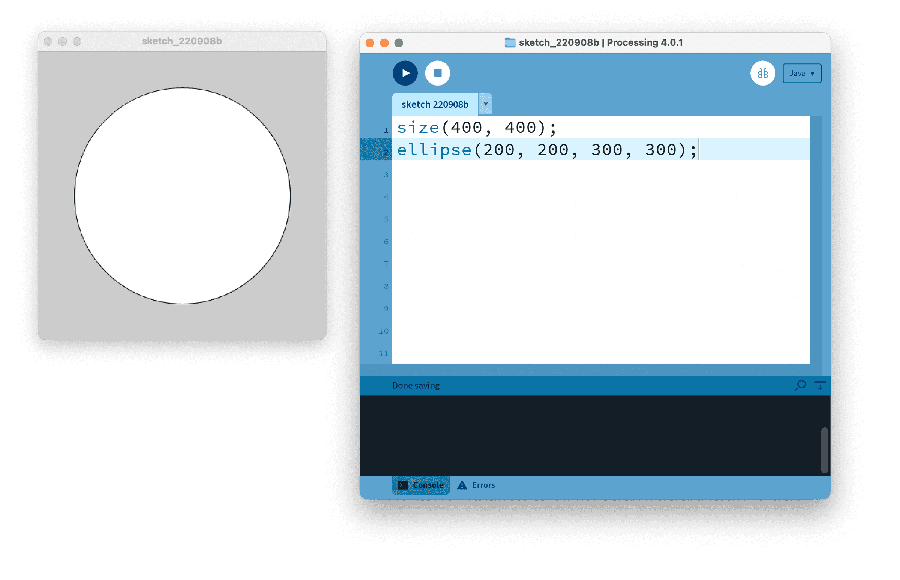
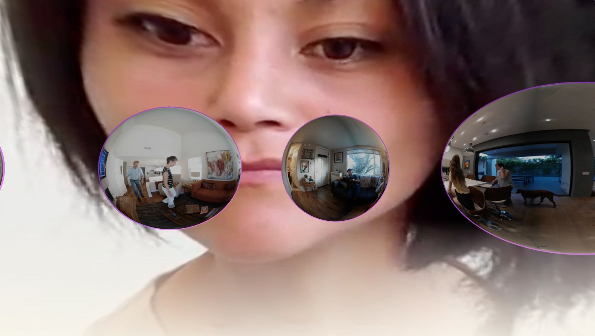

Origin of Open Source
Free Software Movement
In the 1980's, some software developers noticed a troubling trend, where the software industry was gravitating towards creating proprietary software.
The first problem was, if the developers noticed a bug in the software they were using, it was impossible for them to fix it themselves. They would have to wait for the company that created it to release a new version, which could take months or years. The second one was, if the company that created the software went out of business, the developers would either be stuck with old software, or have to buy new one from a different company.
Richard Stallman is one notable developer of the "Free Software" movement. After facing some of the challenges described above while he was a programmer at the Artificial Lab at MIT in the 1970s and 1980s, Stallman created the concept of "free software" to gather a programming community that would discuss and improve on software together. Currently, he is the founder of the Free Software Foundation.
The "free software movement" laid the groundwork for what we now know as the "open source" movement.
Origins of the Term "Open Source"
In late 1997 and very early 1998, some community members desired to transition from the name "free software", because the "free" in its title kept being misconstrued as free to use, not free as in speech.
During this time, Christine Peterson (pictured below) of the Foresight Institute pitched the name "open source", which eventually became a widely used term.
FLOSS Software
FLOSS is an acronym for Free, Libre, Open-Source Software. Despite the Open Source and Free Software movements sharing similar communities and origins, their differences in fundamental ideas cause many people in the Free Software community to argue with those who promote Open Source software.
'The acronym FLOSS is sometimes used to bridge the communities and their differing opinions. The word libre is added to free to make the goal of "free as in freedom", the ideals of liberty, more clear.' - Casey Reas
New Histories and Legacies in Open Source
Processing & Processing Foundation
Ben Fry and Casey Reas created Processing in 2001 at the MIT Media Lab.
"When we started Processing in 2001, the goal was to bring ideas and technologies out of MIT and into the larger world." ->A Modern Prometheus by Casey Reas
The Processing Foundation was founded in 2012 with Ben Fry, Casey Reas, and Dan Shiffman. Check out the wonderful folks who help support the foundation and community!
p5.js
Lauren Lee McCarthy created the p5.js library in 2013 as a new interpreation of Processing for the context of the web.
The p5.js project is currently being led by Qianqian Ye since 2021.
p5.js Editor
The p5.js editor was created by Cassie Tarakajian, and was officially launched in 2018.
They first started working on it's development in 2016. Read about their journey on their announcement post on Medium!